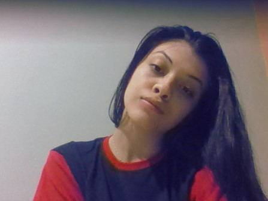

SQUAD
Conhecendo um pouco dos participantes.
-
Diogo Shievou
"Olá me chamo Diogo, tenho 18 anos, sou de Porto Alegre e estou terminando o ensino médio.
-
Carolina da Silva
"Meu nome é Carolina da Silva, tenho 18 anos e sou residente de Porto Alegre.
-
Diogo Izele
"
-

Cristina Pires da Silveira
"Meu nome é Cristina Pires da Silveira, tenho 16 anos, sou natural de Porto Alegre e apaixonada por design, arte e cultura, além da incrível tecnologia existente!
-
Dylan
"Meu nome é Dylan, tenho 17 anos e sou de porto alegre.